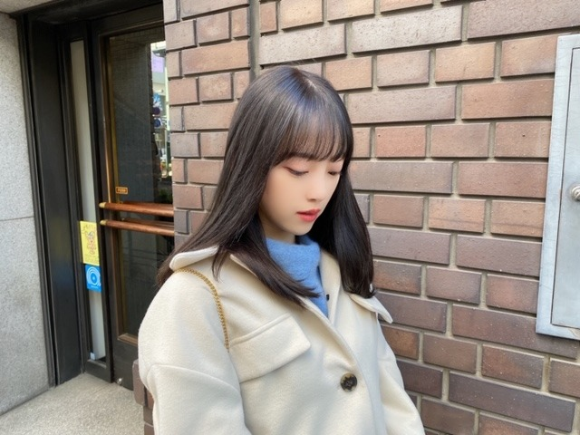
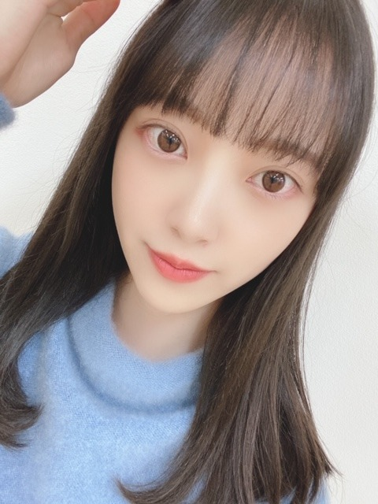
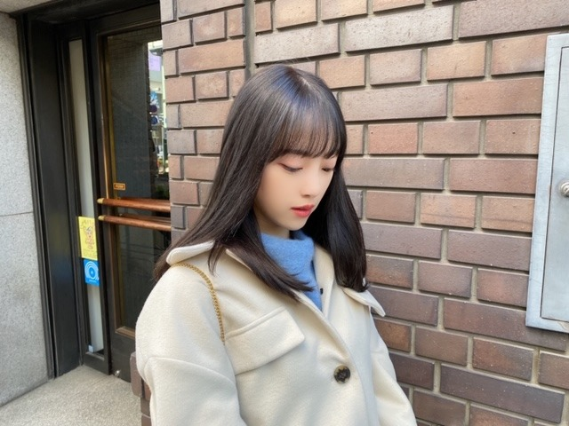
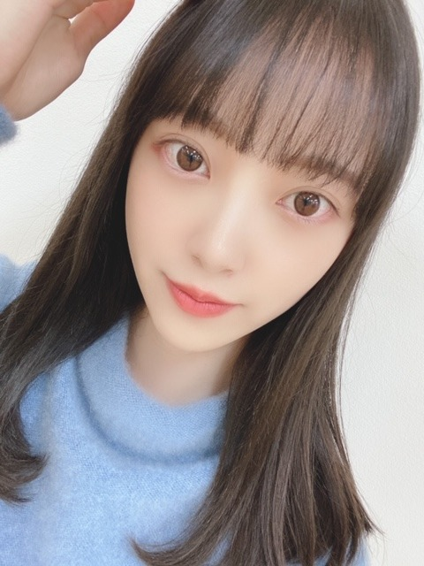

2020/0306Fri暗髪気分
髪色、暗くしました〜
ほぼ黒髪だけど陽に当たると透けて見えるアッシュ系☺︎
髪色の名前はPale Mint Beige だそうです✨

お気に入り♩

One Directionさんの
What a Feeling を聴きながらブログを書いています
The VampsさんもMcFlyさんも好きだから
イギリスのバンドが好きなのかな？
McFlyさんは私がまだ小学生とか中学生の時かな、よく聴いてたのは。懐かしいです...今でももちろん聴きます
I've Got Youは名曲です✨
優しくてポップでおしゃれで...心地良くて好きですね☺︎
イギリス行きたいな〜
今日はMステです
ではは
髪色、暗くしました〜
ほぼ黒髪だけど陽に当たると透けて見えるアッシュ系☺︎
髪色の名前はPale Mint Beige だそうです✨

お気に入り♩

One Directionさんの
What a Feeling を聴きながらブログを書いています
The VampsさんもMcFlyさんも好きだから
イギリスのバンドが好きなのかな？
McFlyさんは私がまだ小学生とか中学生の時かな、よく聴いてたのは。懐かしいです...今でももちろん聴きます
I've Got Youは名曲です✨
優しくてポップでおしゃれで...心地良くて好きですね☺︎
イギリス行きたいな〜
今日はMステです
ではは
2020/03/06 09:36
コメント(300)
めちゃめちゃ可愛い〜♡♡
今度ヘアケアについて紹介して欲しいです！！
今度ヘアケアについて紹介して欲しいです！！
未央奈ちゃん♪こんにちは＼(^o^)／ブログの更新ありがとう♪コメント遅れてゴメンね(泣)髪色凄く良いね♪凄く似合ってるよ♪イギリスのバンド良いね♪聴いてみるね♪ブログの写真凄く可愛い～♪Mステ必ずみるな！沢山未央奈ちゃんを見つけるね！凄く楽しみだよ！また、ブログの更新楽しみにしてるね！ではは 堀 未央奈神推し秀喜より！(≧▽≦)
おぉおおおーー髪色めっちゃ良い！！
陽に当たると透けるアッシュ系ってのもまた2パターン楽しめる感じで良いね！
また髪色変わるまでの期間限定だろうから、今日のMステで早速注目させてもらいます！( *・ω・)ノw
しあわせの保護色も初パフォーマンスになるんだよね！頑張って！
感想おくれちゃったけど、MVみましたー水色カチューシャ目立つね！すぐに分かった☆
途中のまいやんとのペアダンスは最初にヒジを合わせるような振り付けのところから涙こらえながら、でも明るく踊ろうとしてる感じが伝わってスゴい良かった。
もう、撮影終わってるMVなのに見ててがんばれって思ってしまったww
寂しいけど、まいやんとの最後のMVおつかれさまでしたm(__)m
残りの一緒に出来る活動も悔いとか残さないようにやり遂げてください。早速今日のMステも！
ブログ更新ありがとー
でわわ
陽に当たると透けるアッシュ系ってのもまた2パターン楽しめる感じで良いね！
また髪色変わるまでの期間限定だろうから、今日のMステで早速注目させてもらいます！( *・ω・)ノw
しあわせの保護色も初パフォーマンスになるんだよね！頑張って！
感想おくれちゃったけど、MVみましたー水色カチューシャ目立つね！すぐに分かった☆
途中のまいやんとのペアダンスは最初にヒジを合わせるような振り付けのところから涙こらえながら、でも明るく踊ろうとしてる感じが伝わってスゴい良かった。
もう、撮影終わってるMVなのに見ててがんばれって思ってしまったww
寂しいけど、まいやんとの最後のMVおつかれさまでしたm(__)m
残りの一緒に出来る活動も悔いとか残さないようにやり遂げてください。早速今日のMステも！
ブログ更新ありがとー
でわわ
ブログ更新ありがとう！
新しい髪色、未央奈ちゃんにすごく似合っていて
めっちゃかわいいです！！！
mステ楽しみにしてます。
未央奈ちゃん大好きです！
新しい髪色、未央奈ちゃんにすごく似合っていて
めっちゃかわいいです！！！
mステ楽しみにしてます。
未央奈ちゃん大好きです！
ばり似合っとる
未央奈ちゃんこんばんは‼ありがとうございます！頑張ります‼今日から頑張ります‼ありがとうございます！
未央奈さん
素晴らしい！
綺麗ですね
二期生 最高～
素晴らしい！
綺麗ですね
二期生 最高～
2.ハーフアップでヽ(´▽｀)/
あんまり見てない気がするから
忙しいのにいつもモバメとブログありがとう。
あんまり見てない気がするから
忙しいのにいつもモバメとブログありがとう。
1980年代後半～2000年代のイギリスはいいバンドがたくさんいますよ◎
写真可愛すぎる！
Mステ楽しみ！
Mステ楽しみ！
ファッションは結構好きで色々欲しいなーとか思うんですけど、何故か自分の髪の色、髪型にこだわりがないんですよねー。
女の子たちだと色々楽しめますもんね！
似合ってます、髪、服、共に！
自分の知らない曲が多いので聴いてみます！
海外も自分の知らない世界があるので本当に行きたい場所ばかり。
女の子たちだと色々楽しめますもんね！
似合ってます、髪、服、共に！
自分の知らない曲が多いので聴いてみます！
海外も自分の知らない世界があるので本当に行きたい場所ばかり。
黒髪がいいですよ 日本人女性はね 染めると髪が傷みますし、今の未央奈は最強です(^-^)/
未央奈ちゃん＼(^o^)／お疲れさまでした
暗めの髪色は良いよ(*´ω`*)
髪色の名前はミントとベージ入ってるのに、黒っぽいってややこしくない？（笑）
Mステ頑張って(/･ω･)/
これからも頑張って(/･ω･)/
暗めの髪色は良いよ(*´ω`*)
髪色の名前はミントとベージ入ってるのに、黒っぽいってややこしくない？（笑）
Mステ頑張って(/･ω･)/
これからも頑張って(/･ω･)/
未央奈ちゃん、こんばんは〜
僕は見つけてしまった。
Tik Tokのおすすめをチェックしてたら
未央奈ちゃんを褒め称えるやつを…
好きな人が作ったものだから
好意的な仕上がりになってた。
けど、それを差し引いても
未央奈ちゃんを応援したくなって
しまう内容だった。
乃木坂にすべてをかける少女の姿が
そこにありました。
未央奈ちゃんを好きで良かった、
間違ってなかったと思い涙しました。
乃木坂の曲以外で泣かされるのは
不覚ですが、今嬉しい気分です。
では。
僕は見つけてしまった。
Tik Tokのおすすめをチェックしてたら
未央奈ちゃんを褒め称えるやつを…
好きな人が作ったものだから
好意的な仕上がりになってた。
けど、それを差し引いても
未央奈ちゃんを応援したくなって
しまう内容だった。
乃木坂にすべてをかける少女の姿が
そこにありました。
未央奈ちゃんを好きで良かった、
間違ってなかったと思い涙しました。
乃木坂の曲以外で泣かされるのは
不覚ですが、今嬉しい気分です。
では。
こんばんはお疲れさま☺
髪の毛色変えたんやね✨
自分が好きな色が一番やから。
明るい色も似合っていて好きやったけどね✨
アッシュも光にあたると綺麗な色やもんね☺
今日はMステ楽しみです。
家に帰りすぐ録画予約したよ(笑)
仕事疲れで寝てまったらアカンから(笑)☺
ではではまたね✨
体調には気をつけてくださいな✨
ほなね、堀ちゃん☺
髪の毛色変えたんやね✨
自分が好きな色が一番やから。
明るい色も似合っていて好きやったけどね✨
アッシュも光にあたると綺麗な色やもんね☺
今日はMステ楽しみです。
家に帰りすぐ録画予約したよ(笑)
仕事疲れで寝てまったらアカンから(笑)☺
ではではまたね✨
体調には気をつけてくださいな✨
ほなね、堀ちゃん☺
未央奈、似合ってるよ！
黒髪すごくタイプです！
未央奈の聴いてるアーティストが聞けて嬉しいよ
俺も聴いてみる
未央奈が好きすぎて辛いよ
Mステもみるし明日の2期生ライブのやつも絶対みるからね！
応援してます。
黒髪すごくタイプです！
未央奈の聴いてるアーティストが聞けて嬉しいよ
俺も聴いてみる
未央奈が好きすぎて辛いよ
Mステもみるし明日の2期生ライブのやつも絶対みるからね！
応援してます。
黒髪の堀ちゃんめっちゃ好きです！
Mステとshowroomの二期生ライブ楽しみにしてます！！
Mステとshowroomの二期生ライブ楽しみにしてます！！
俺も髪色真似しようかな〜(笑)
Mステがんばれ
Mステがんばれ
ブログ更新ありがとう！
いつもかわいい未央奈ちゃん！そんなあなたを見るためMステ絶対見る！
いつもかわいい未央奈ちゃん！そんなあなたを見るためMステ絶対見る！
未央奈ブログ更新ありがとう
ヘアスタイルほんと好き❤
Mステ楽しみにしてまーす笑
またコメントするね〜
こばより
ヘアスタイルほんと好き❤
Mステ楽しみにしてまーす笑
またコメントするね〜
こばより
黒髪、凄く似合ってます！！
やっぱり堀ちゃんは黒髪が一番似合ってると思います。
Mステ楽しみにしてます！
やっぱり堀ちゃんは黒髪が一番似合ってると思います。
Mステ楽しみにしてます！
みおなちゃん！！
ブログ更新ありがとう
黒髪可愛すぎて
死にそうー
mステ
楽しみにしてます
ブログ更新ありがとう
黒髪可愛すぎて
死にそうー
mステ
楽しみにしてます
好き。
堀ちゃん、ブログ更新ありがとー
毎日更新ありがとう
Mステ見るよ！
どんな髪型か楽しみ楽しみ
今日の画像も最高にかわいい！
黒髪も最高てす。
明日の幻の2期生ライブ、必ず見るよ！
バイバイキーン
毎日更新ありがとう
Mステ見るよ！
どんな髪型か楽しみ楽しみ
今日の画像も最高にかわいい！
黒髪も最高てす。
明日の幻の2期生ライブ、必ず見るよ！
バイバイキーン
こんばんは。
暗めの髪かなり良い感じですね。
光の加減で変化するオシャレ感ぴったりですね。
この色この感じかなり好きです。
また明るくしたら、これに戻して欲しいくらいです。
写真をまたありがとうございます。
ここのところの写真がより可愛いので癒さまくってますよ。
凄く可愛く美しいです。
癒しのコレクションでもかなりのハイレベルですよ。
ファン冥利につきます。大好きですよ星
イギリス含めてヨーロッパ中を旅したいですね。
妄想で旅行します。
Mステ楽しみです。
大好きだから応援してますよ。
頑張って行きましょう！
暗めの髪かなり良い感じですね。
光の加減で変化するオシャレ感ぴったりですね。
この色この感じかなり好きです。
また明るくしたら、これに戻して欲しいくらいです。
写真をまたありがとうございます。
ここのところの写真がより可愛いので癒さまくってますよ。
凄く可愛く美しいです。
癒しのコレクションでもかなりのハイレベルですよ。
ファン冥利につきます。大好きですよ星
イギリス含めてヨーロッパ中を旅したいですね。
妄想で旅行します。
Mステ楽しみです。
大好きだから応援してますよ。
頑張って行きましょう！
未央奈ちゃんの髪色ばっちりです!めっちゃかわいい！！Mステ楽しみです。いつか一緒にイギリス行きたいなあ。
未央奈！
髪色いいね(*^^*)
Mステ観るよ～♪楽しみ！
髪色いいね(*^^*)
Mステ観るよ～♪楽しみ！
イギリス行くなら飛鳥連れていけば、大丈夫だよ
Mステ観まーす
テレビの前で待機しときます
Mステ観まーす
テレビの前で待機しときます
未央奈ちゃんブログ更新ありがとう！
Mステ見るよ！
またコメントします！
Mステ見るよ！
またコメントします！
いい髪色だ!!かわよし!!
みおちゃんブログ更新ありがとう！
髪色いいね(⑉• •⑉)
同じのにしたい！！！
Mステは見るよ〜！
髪型何にするのか楽しみ(｡･ω･｡)
髪色いいね(⑉• •⑉)
同じのにしたい！！！
Mステは見るよ〜！
髪型何にするのか楽しみ(｡･ω･｡)
更新ありがとう。
やっぱり黒髪似合ってるよ～
僕もイギリス行きたいです。
って言うか海外行ってみたいな～
特にヨーロッパ方面かな
写真もかわいいです。
Ｍステ見れるかな～
Ｍステ頑張ってね。
やっぱり黒髪似合ってるよ～
僕もイギリス行きたいです。
って言うか海外行ってみたいな～
特にヨーロッパ方面かな
写真もかわいいです。
Ｍステ見れるかな～
Ｍステ頑張ってね。
アメージングな髪色。黒の中でサファイアのような光沢が透けてます。
私も常に西洋楽を聴きながら英語を学びますね。面白かったです。母国の人の発音そのトーンとかイントネーションとかを真似して反復復唱してます。子供が大人の言動を観察して話す能力を身に付けたと同じことです。ドラマも映画も素敵な教材ですね。
みおなさんのお薦め曲聴きたいですね。
私も常に西洋楽を聴きながら英語を学びますね。面白かったです。母国の人の発音そのトーンとかイントネーションとかを真似して反復復唱してます。子供が大人の言動を観察して話す能力を身に付けたと同じことです。ドラマも映画も素敵な教材ですね。
みおなさんのお薦め曲聴きたいですね。
うぎゃーーーーー
暗めの髪色、超好みです
今日のMステ楽しみにしています
暗めの髪色、超好みです
今日のMステ楽しみにしています
Mステ頑張ってね！
未央奈ブログ更新ありがとう！
まめに更新してくれるの嬉しい。
自然な色の暗髪似合ってるよ。すごく良い色ですごく可愛い。
イギリスのバンド好きなんだね。ポップでおしゃれなところが未央奈っぽくて良いね。僕が思いつくイギリスのバンドはクイーンとかレッドツェッペリンとかクラシックロックばかりだなあ。
Mステ見るよ！髪型気になるなあ。楽しみ！
では！
まめに更新してくれるの嬉しい。
自然な色の暗髪似合ってるよ。すごく良い色ですごく可愛い。
イギリスのバンド好きなんだね。ポップでおしゃれなところが未央奈っぽくて良いね。僕が思いつくイギリスのバンドはクイーンとかレッドツェッペリンとかクラシックロックばかりだなあ。
Mステ見るよ！髪型気になるなあ。楽しみ！
では！
黒髪も悪くないだろう
Mステ頑張ってね！絶対みる！
こんばんは。ブログ更新ありがとうございます。
私は髪の色は濃い方が好きです。今回の未央奈ちゃんの髪色もとっても良いと思います。
私も若い頃はブリティッシュロックを良く聞いてました。とは言っても現代のブリティッシュロックとはだいぶ違いますが。あとアメリカのロックも好きでした。私は現在56歳なので、中学・高校生の頃、70年代後半～80年代前半は、ロックが巨大産業だった時代でしたね。でも私は80年代後半以降は邦楽ばっかりになりました。欧米の音楽も、日本の音楽も、刻々と変化していったと思います。
ではまた。
私は髪の色は濃い方が好きです。今回の未央奈ちゃんの髪色もとっても良いと思います。
私も若い頃はブリティッシュロックを良く聞いてました。とは言っても現代のブリティッシュロックとはだいぶ違いますが。あとアメリカのロックも好きでした。私は現在56歳なので、中学・高校生の頃、70年代後半～80年代前半は、ロックが巨大産業だった時代でしたね。でも私は80年代後半以降は邦楽ばっかりになりました。欧米の音楽も、日本の音楽も、刻々と変化していったと思います。
ではまた。
みおな、こんばんは。
Mステ、録画していますので明日見るね。
黒髪はやっぱりいいね。
Mステ、録画していますので明日見るね。
黒髪はやっぱりいいね。
あと30分程でMステですね！
新曲『しあわせの保護色』の初披露、楽しみにしています♪☆
新曲『しあわせの保護色』の初披露、楽しみにしています♪☆
未央奈ちゃん！！ブログ更新ありがとう！お疲れ様です！！
明日の2期生ライブshowroomで絶対見ます！！
応援してるね！！
明日の2期生ライブshowroomで絶対見ます！！
応援してるね！！
堀ちゃんブログありがとう！
髪色、とてもいいですね
Mステ頑張って下さい！
髪色、とてもいいですね
Mステ頑張って下さい！
相変わらず、堀ちゃん可愛い!!
ワンダイレクション僕もメッチャ、ハマってる！
僕が好きなのは、historyかな！
次のブログも楽しみにしてます!!
コロナに負けないで頑張ってください!!!
ワンダイレクション僕もメッチャ、ハマってる！
僕が好きなのは、historyかな！
次のブログも楽しみにしてます!!
コロナに負けないで頑張ってください!!!
みおな、こんばんは。更新ありがとう！近況報告ありがとうございます。Mステ見てます。 では、毎日みおなに良いこと沢山ありますように！ おやすみおな！！
暗めの髪色とても似合ってると思います。
イギリスのバンドはoasisとか好きでしたね。
Mステ見てます。
今日も素敵でした。
イギリスのバンドはoasisとか好きでしたね。
Mステ見てます。
今日も素敵でした。
こんばんは～。
みおなちゃんの髪色、綺麗だね。すごく似合ってる感じだよ(^^)
みおなちゃんはイギリスのバンドが好きなんだ。俺もイギリスのバンドが好きだよ。The Vampsなんかは俺もよく聴くよ。珍しくエレキギターを使わないバンドだよね。でもエレキギターを使わないと、なんかちょっと綺麗に聴こえる感じもあるよね。俺もそんな所が好きだよ。McFlyも前に少し聴いた事があるよ。
みおなちゃんが言うように、イギリスのバンドってポップさがあるよね。無理にヘヴィーになり過ぎないというか。俺もそんな所が好きだよ。
今日のミュージックステーションも観たよ。とっても良かったよ(^^)無観客っていうのがちょっと寂しかったけどね。次回はお客さんが入るといいね。
じゃあ。
みおなちゃんの髪色、綺麗だね。すごく似合ってる感じだよ(^^)
みおなちゃんはイギリスのバンドが好きなんだ。俺もイギリスのバンドが好きだよ。The Vampsなんかは俺もよく聴くよ。珍しくエレキギターを使わないバンドだよね。でもエレキギターを使わないと、なんかちょっと綺麗に聴こえる感じもあるよね。俺もそんな所が好きだよ。McFlyも前に少し聴いた事があるよ。
みおなちゃんが言うように、イギリスのバンドってポップさがあるよね。無理にヘヴィーになり過ぎないというか。俺もそんな所が好きだよ。
今日のミュージックステーションも観たよ。とっても良かったよ(^^)無観客っていうのがちょっと寂しかったけどね。次回はお客さんが入るといいね。
じゃあ。
いい色だね
明日の配信絶対見ます、未央奈全力で応援します。画面の前でサイリュウム振ります。


とても似合ってます！！！
今日のMステ楽しみ☺︎